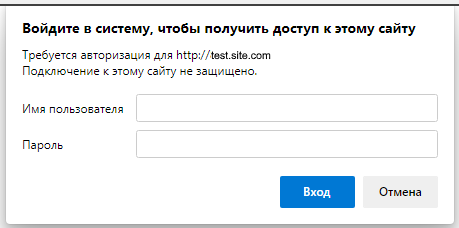

Basic authorization
There are cases when the page is closed with basic authorization

There are two methods for working with basic authorization:
An example of using the method BrowserBasicAuthenticationAsync
|
File: ExampleTest6.cs |
|
using System; using System.Collections.Generic; using System.ComponentModel; using System.Windows.Forms; using System.Threading; using System.Threading.Tasks; using System.IO; using System.Data; using System.Drawing; using System.Linq; using System.Text; using System.Text.RegularExpressions; using System.Net; using System.Net.Http; using System.Net.Http.Headers; using System.Reflection; using Newtonsoft.Json; using HatFramework; namespace Hat { public class ExampleTest5 { Tester tester; // The main variable for the autotest operation // The main input function (the autotest starts with this function) public async void Main(Form browserWindow) { tester = new Tester(browserWindow); // Initializing the main variable await setUp(); // The function of getting started with the autotest await test(); // The function of performing test actions await tearDown(); // Autotest shutdown function } public async Task setUp() { await tester.BrowserFullScreenAsync(); // Sets the browser resolution to full screen await tester.BrowserBasicAuthenticationAsync("login", "pass"); // Performing basic authorization } public async Task test() { await tester.TestBeginAsync(); // The beginning of the execution of actions await tester.GoToUrlAsync("https://test.site.com", 5); // Loading the page at the specified address await tester.TestEndAsync(); // Completing actions } public async Task tearDown() { await tester.BrowserCloseAsync(); // Closes the browser } } } |
An example of using the method GoToUrlBaseAuthAsync
|
File: ExampleTest6.cs |
|
using System; using System.Collections.Generic; using System.ComponentModel; using System.Windows.Forms; using System.Threading; using System.Threading.Tasks; using System.IO; using System.Data; using System.Drawing; using System.Linq; using System.Text; using System.Text.RegularExpressions; using System.Net; using System.Net.Http; using System.Net.Http.Headers; using System.Reflection; using Newtonsoft.Json; using HatFramework; namespace Hat { public class ExampleTest5 { Tester tester; // The main variable for the autotest operation // The main input function (the autotest starts with this function) public async void Main(Form browserWindow) { tester = new Tester(browserWindow); // Initializing the main variable await setUp(); // The function of getting started with the autotest await test(); // The function of performing test actions await tearDown(); // Autotest shutdown function } public async Task setUp() { await tester.BrowserFullScreenAsync(); // Sets the browser resolution to full screen } public async Task test() { await tester.TestBeginAsync(); // The beginning of the execution of actions // Performing basic authorization when loading a page await tester.GoToUrlBaseAuthAsync("https://test.site.com", "login", "pass", 5); await tester.TestEndAsync(); // Completing actions } public async Task tearDown() { await tester.BrowserCloseAsync(); // Closes the browser } } } |
Created with the Personal Edition of HelpNDoc: Easily create PDF Help documents